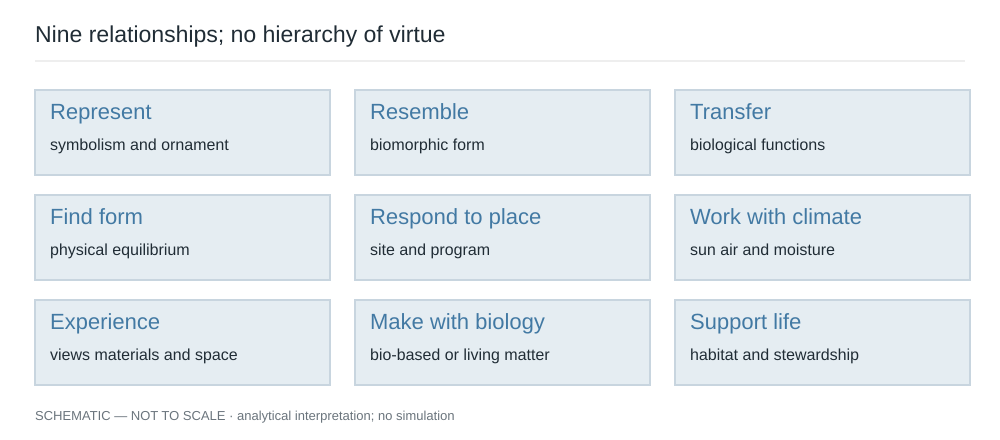
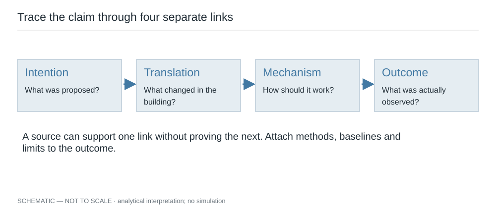
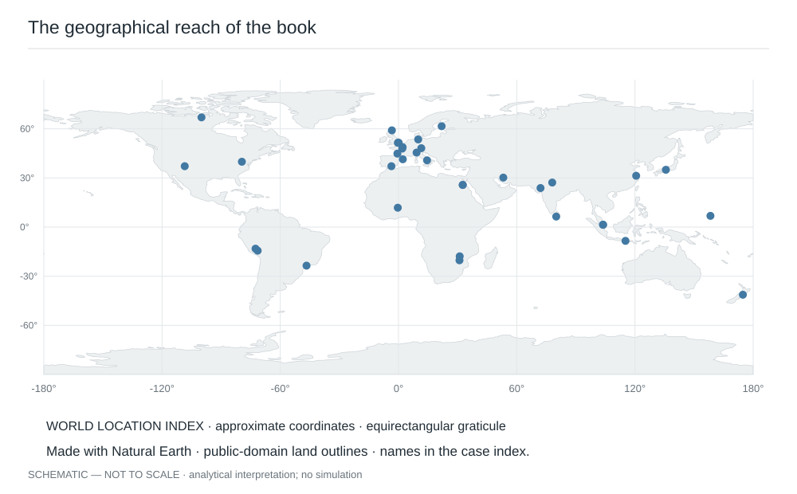
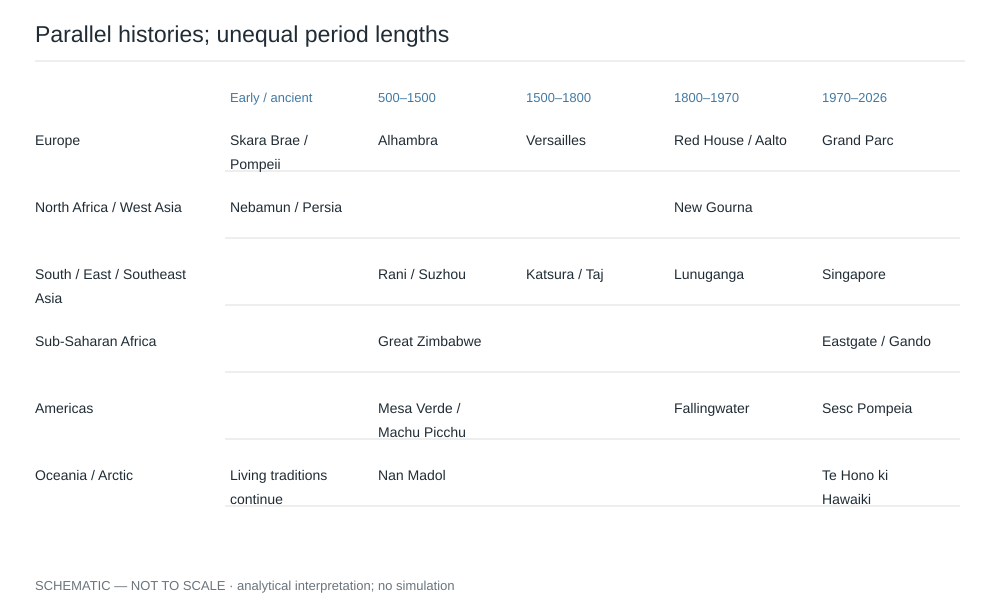

A branch carved into stone, an open courtyard and a roof that supports a meadow describe three different relationships with nature. The first represents another living thing. The second organizes exposure to the atmosphere. The third offers a place in which organisms may live. All can matter. None establishes the value of the others. This book begins with that distinction and follows it through buildings, gardens, rooms and thresholds, from early settlements to possible futures.
A wider meaning of nature
For an architect, nature includes much more than vegetation. Gravity acts through every beam. Rain tests every junction. The sun changes the usefulness of a window through the day and the year. Geology becomes a foundation condition, a quarry, a wall and sometimes an exposed surface in a room. Organisms occupy materials, soil, gardens and buildings whether the designer invites them or not. Nature can therefore enter an architectural argument as an image, an experience, a physical process, a resource or a community of living things.
These are editorial categories, not a universal account of how cultures divide the world. At Te Papa in Aotearoa New Zealand, the museum explains its contemporary wharenui through ancestors, bodily relationships and the peoples represented in its carvings. Such an account cannot be reduced to a European opposition between an artificial building and an external natural world. The significance resides in relationships, protocols and lineage as well as in material form. R13
The practical consequence is a change in the first design question. Instead of asking how to add nature, ask what relationships already exist. Who belongs to the place? Where does water go? Which trees and soils survive? What work maintains them? What is visible from an ordinary chair? Which seasonal conditions are welcome, and which threaten the occupants? The answer may call for planting, but it might equally call for a smaller footprint, a repair, a porch, an unobstructed view or a different maintenance agreement.
Nine overlapping relationships
Symbolism and ornament make nature legible through representation. A leaf pattern may carry religious, political, domestic or personal meaning. Its worth does not depend on saving energy. Biomorphic form describes resemblance: a building may look like a shell or a flower. Biomimicry makes a stronger claim, involving the transfer of a biological function into a design process or system. The Biomimicry Institute's toolbox organizes work around functions and the abstraction of strategies; a photograph of a building beside an organism is only the beginning of that investigation. R59
Natural geometry and form finding deserve a separate place. A hanging chain responds to gravity whether or not it resembles a vine. A membrane may find an equilibrium surface without copying an animal. Organic and site-responsive architecture concerns relationships among site, program, material and spatial organization; its meaning has varied among architects. Bioclimatic design works with sun, air, moisture and seasonal conditions. These categories overlap, but the mechanism in each should remain explainable.
Biophilic experience concerns encounters with living things and with patterns, materials and spatial conditions associated with nature. Terrapin's tenth-anniversary framework, published in 2024, retains the familiar fourteen-pattern title while adding awe as a fifteenth pattern. It is useful as a vocabulary for design discussion. A framework is not itself proof that every application produces the same health outcome. R42
Natural, bio-based and living materials also require distinctions. Stone is natural without being biological. Timber is biological in origin but ordinarily not a living tree after installation. A fungal composite may be dried after growth; a photobioreactor intentionally maintains living organisms. Ecological integration concerns the relationships among organisms, habitat, water, soil and management. Regeneration is a consequential claim about improvement over time, which needs a starting condition and a defined boundary. IUCN announced a second edition of its nature-based solutions standard in October 2025; this book identifies that edition rather than assuming the original remains current. R41 R43

The categories overlap. A cultural, experiential or symbolic value does not establish an ecological outcome.
Original analytical diagram prepared for Nature + Architecture · 2026-09-20 · Original project artwork; no third-party drawing traced · Author synthesis; R41 R42 R43 R59. noneFour spatial lenses
Inside a building, a view can reveal weather without admitting rain. A material can offer tactile variation without supporting habitat. Daylight may change the perception of depth or time while also creating glare. The interior therefore has its own relationships with nature; it should not be treated as an empty container waiting for plants.
The in-between includes a veranda, a loggia, a courtyard edge, a porch, a winter garden and a screen. These spaces negotiate exposure. An open courtyard belongs to outdoor air; a glazed atrium may trap heat, need smoke control and become a conditioned volume. Similar plans can conceal very different environmental behavior. The useful drawing is often a section showing where enclosure, drainage, shade and occupation actually occur.
Outside, siting and the ground plane determine whether trees retain viable roots, whether a building obstructs a watercourse and whether its windows become hazards for birds. Beyond the property, a project participates in a watershed, a street network and habitats that do not stop at a fence. These larger systems matter when they explain a building's consequences, but they should not dissolve the architectural question into an abstract regional plan.
What evidence can establish
A designer's account establishes an intention. A measured study establishes what was observed under a particular method and set of conditions. A simulation estimates behavior within its assumptions. Historical scholarship interprets records and objects. An occupant's testimony describes an experience that deserves attention without automatically representing everyone. A scenario explores a possible future. The book names these differences because design decisions become weaker when one kind of evidence impersonates another.
The register accompanying this book records source access and evidence type. Some scientific papers were available only through their abstracts, and those limits remain visible. No energy model, airflow simulation, structural calculation or ecological survey has been performed for this publication. Its original diagrams explain relationships and tests; they are not measured reconstructions. Descriptions of climate are qualitative. They do not imply that weather series or formal climate classifications were computed for every site.
Comparison is most useful when it exposes a difference. A shaded outdoor room and an air-conditioned conservatory can both be pleasant while demanding different amounts of energy and labor. A private planted balcony and a public garden do not offer the same access. The shared term green should never erase these distinctions. Nor should a single score combine unrelated cultural, thermal, aesthetic and ecological values and pretend that their tradeoffs have disappeared.

An intention and a measured outcome occupy different positions in the evidence chain. Missing links remain visible.
Original analytical diagram prepared for Nature + Architecture · 2026-09-20 · Original project artwork; no third-party drawing traced · Author synthesis; R29 R31 R32. noneHow to read and listen
The chapters move broadly through time, while living traditions return in later periods. Each chapter can be opened independently. The audio follows the chapter's prose, including its qualifications and practical interpretation; source links and the bibliography remain available on screen. Documentary images have individual credits. The diagrams use consistent blue lines for the relationship being examined, with labels and line types so that meaning does not depend on color alone.
A useful way to work through the book is to keep two drawings beside it. On one, record what a precedent actually documents. On the other, sketch the question it raises for your own site. The distance between these drawings is where design judgment operates. A precedent can reveal a possibility without authorizing a copy. A beautiful result can deserve study even when the evidence for a claimed environmental benefit remains incomplete.
Three questions guide the opening exercise. What does nature mean in the example before you? Which architectural decision changes because of that meaning? What evidence would persuade you that the intended benefit occurred?

World map using Natural Earth land outlines, approximate coordinates and a longitude-latitude graticule. Dots are navigation aids, not survey locations; use the linked case index for names.
Original case-location map; base geography by Natural Earth · 2026-09-20 · Original location overlay; Natural Earth land outlines public domain · Author synthesis; Case register; https://www.naturalearthdata.com/about/terms-of-use/. Natural Earth 1:110m land projected to equirectangular; case locations overlaid
This editorial timeline compares selected threads in parallel. Column widths are not proportional to elapsed time; living traditions are not confined to an origins column.
Original analytical diagram prepared for Nature + Architecture · 2026-09-20 · Original project artwork; no third-party drawing traced · Author synthesis; Case register. none{kind=link}